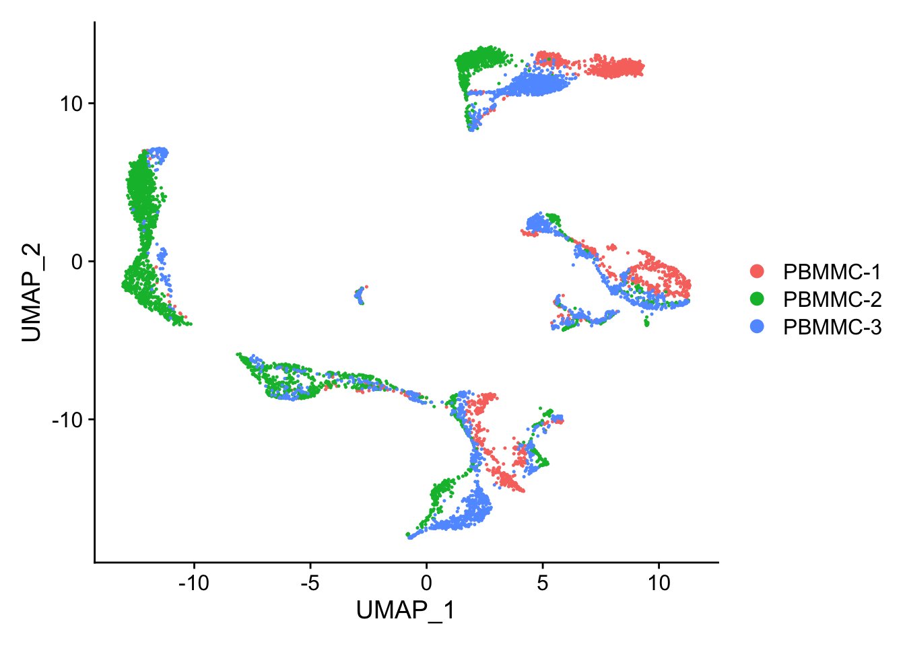

seu <- readRDS("seu_day1-3.rds")Dimensionality reduction
Material
- Making sense of PCA
- Understanding t-SNE
- t-SNE explained by Josh Starmer
- Understanding UMAP
- Video by one of the UMAP authors
- More info on UMAP parameters
Exercises
Load the seu dataset you have created yesterday:
And load the following packages:
Once the data is normalized, scaled and variable features have been identified, we can start to reduce the dimensionality of the data. For the PCA, by default, only the previously determined variable features are used as input, but can be defined using features argument if you wish to specify a vector of genes. The PCA will only be run on the variable features, that you can check with VariableFeatures(seu).
seu <- Seurat::RunPCA(seu)To view the PCA plot:
Seurat::DimPlot(seu, reduction = "pca")We can colour the PCA plot according to any factor that is present in @meta.data, or for any gene. For example we can take the column percent.globin:
Seurat::FeaturePlot(seu, reduction = "pca", features = "percent.globin")
Note
Note that we used a different plotting function here: FeaturePlot. The difference between DimPlot and FeaturePlot is that the first allows you to color the points in the plot according to a grouping variable (e.g. sample) while the latter allows you to color the points according to a continuous variable (e.g. gene expression).
Exercise
Generate a PCA plot where color is according to counts of a gene (i.e. gene expression). For example, you can take HBA1 (alpha subunit of hemoglobin), or one of the most variable genes (e.g. IGKC).
Answer
Generating a PCA plot coloured according to gene expression (here HBA1):
Seurat::FeaturePlot(seu, reduction = "pca", features = "HBA1")We can generate heatmaps according to their principal component scores calculated in the rotation matrix:
Seurat::DimHeatmap(seu, dims = 1:12, cells = 500, balanced = TRUE)The elbowplot can help you in determining how many PCs to use for downstream analysis such as UMAP:
Seurat::ElbowPlot(seu, ndims = 40)The elbow plot ranks principle components based on the percentage of variance explained by each one. Where we observe an “elbow” or flattening curve, the majority of true signal is captured by this number of PCs, eg around 25 PCs for the seu dataset.
Including too many PCs usually does not affect much the result, while including too few PCs can affect the results very much.
UMAP: The goal of these algorithms is to learn the underlying manifold of the data in order to place similar cells together in low-dimensional space.
seu <- Seurat::RunUMAP(seu, dims = 1:25)To view the UMAP plot:
Seurat::DimPlot(seu, reduction = "umap")
Exercise
Try to change:
A. Color the dots in the UMAP according to a variable (e.g. percent.globin or HBA1). Any idea where the erythrocytes probably are in the UMAP?
B. The number of neighbors used for the calculation of the UMAP. Which is the parameter to change and how did it affect the output. What is the default ? In which situation would you lower/increase this ?
C. The number of dims to extremes dims = 1:5 or dims = 1:50 how did it affect the output ? In your opinion better few PCAs too much or too few ? Why does dims = 1:100 not work? When would more precision be needed?
Answer
Answer A
Seurat::FeaturePlot(seu, features = c("HBA1",
"percent.globin",
"IGKC",
"percent.mito"))The erythrocytes are probably in the cluster with a higher percentage of globin expression.
Answer B
seu <- Seurat::RunUMAP(seu, dims = 1:25, n.neighbors = 5)Seurat::DimPlot(seu, reduction = "umap")The default number of neighbours is 30. It can be of interest to change the number of neighbors if one has subset the data (for instance in the situation where you would only consider the t-cells inyour data set), then maybe the number of neighbors in a cluster would anyway be most of the time lower than 30 then 30 is too much. In the other extreme where your dataset is extremely big an increase in the number of neighbors can be considered.
Answer C
seu <- Seurat::RunUMAP(seu, dims = 1:5)Seurat::DimPlot(seu, reduction = "umap")seu <- Seurat::RunUMAP(seu, dims = 1:50) Seurat::DimPlot(seu, reduction = "umap")Taking dims = 1:100 does not work as in the step RunPCA by default only 50pcs are calculated, so the maximum that we can consider in further steps are 50, if more precision makes sense, for instance, if the genes that is of interest for your study is not present when the RunPCA was calculated, then an increase in the number of components calculated at start might be interesting tobe considered. Taking too few PCs we have a « blob » everything looks connected. Too many PCs tends to separate everything. Personally it is more interesting for me too have maybe 2 clusters separated of epithelial cells that I then group for further downstream analysis rather than having very distinct cells being clustered together. So I would rather take the « elbow » of the elbow plot a bit further to the right.
After having done these exercises, change the UMAP back to a UMAP based on the first 25 PCs, in order to replicate the exercises in the following chapters. Do this by:
seu <- Seurat::RunUMAP(seu, dims = 1:25)